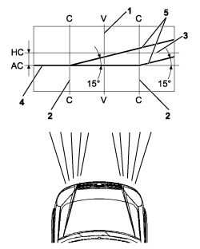
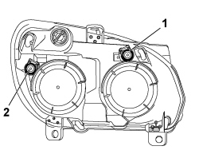

5540B38 HEADLAMP/LIGHT CLUSTER LIGHT BEAM - POSITION
- Path
- Procedures > 55 ELECTRICAL EQUIPMENT > 5540 EXTERIOR LIGHTING > 5540B headlamps > 5540B38 HEADLAMP/LIGHT CLUSTER LIGHT BEAM - POSITION
- Kind
- repair procedure (removal / refitting; the operation number is the code)
- Applies to
- engines: 1.4 8v, 1.6 16v, 1.3 JTD 16V, 1.9 JTD 8V; all production periods
- Interactive page
- https://sloeber94.github.io/elrnDB-fDbl/en/#/223000164
Applies to: engines: 1.4 8v, 1.6 16v, 1.3 JTD 16V, 1.9 JTD 8V; production: da 12/03; only with equipment: MY 2005
Position the vehicle complete with spare wheel, tools, fluids, fuel reserve and with the driver on board.
Check that the tyre inflation pressure is correct.
Place the headlamp alignment control switch in position "0".
Place the vehicle on a flat surface, perpendicular to a screen with an opaque surface 10 metres away on which the following lines are traced.
1. V-V: vertical, corresponding to the trace of vehicle plane of symmetry.
2. C-C: traces of vertical planes passing through the reference centres of the light clusters.
3. HC-HC: horizontal corresponding to the height from the ground of the reference centres for the light clusters.
4. AC-AC: horizontal 13 cm below the line HC - HC.
5. Lines inclined by 15° as illustrated in the diagram.
Switch on the dipped headlamps.

Applies to: engines: 1.4 8v, 1.6 16v, 1.3 JTD 16V, 1.9 JTD 8V; production: da 12/03; only with equipment: MY 2005
1. Vertical alignment. Adjust the vertical adjustment screw for the light cluster so that the horizontal section of the demarcation line between the dark zone and the area lit up by the light band is aligned with the line AC - AC traced on the screen.
2. Horizontal alignment. Adjust the horizontal adjustment screw for the light cluster so that the point where the two horizontal and inclined demarcation lines cross with the point where lines C - C and AC - AC cross on the screen are aligned.
